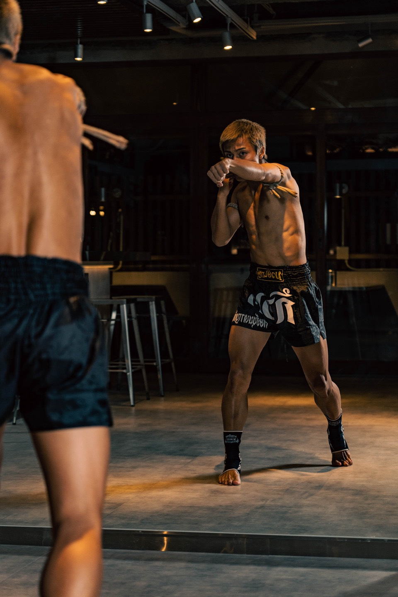
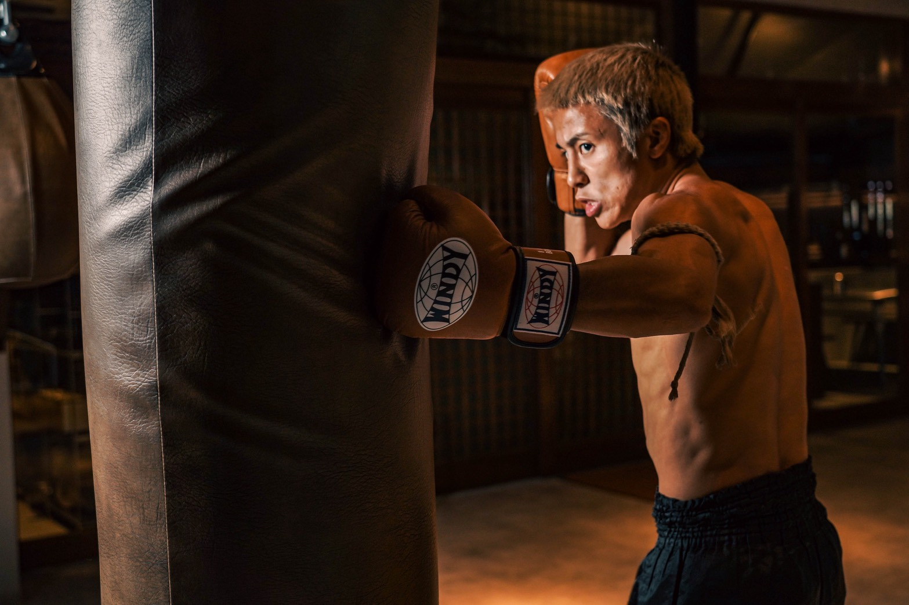
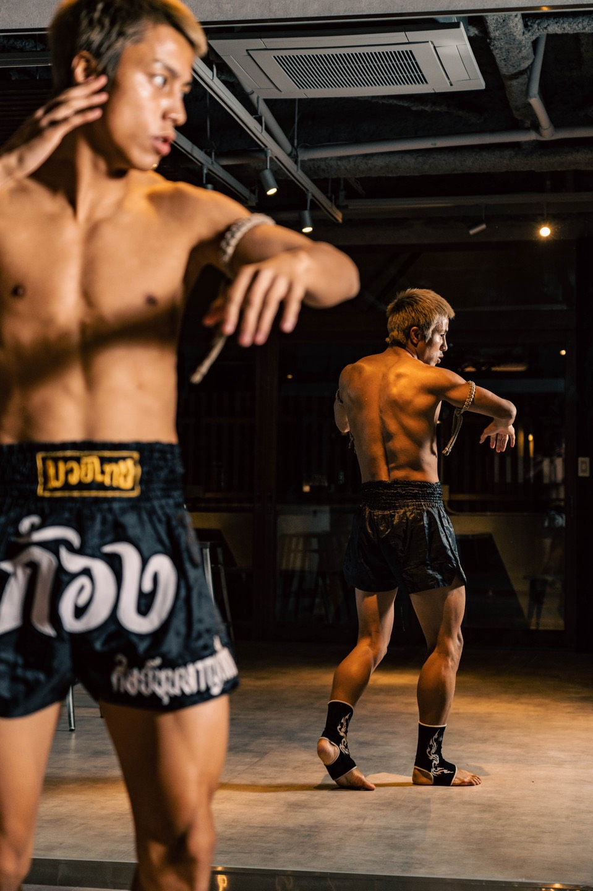
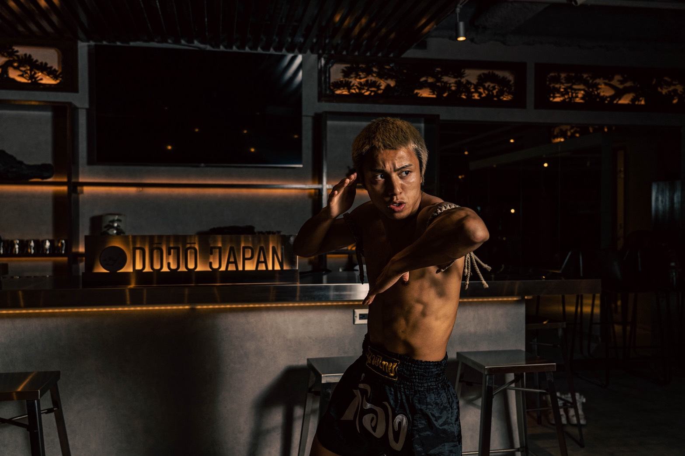
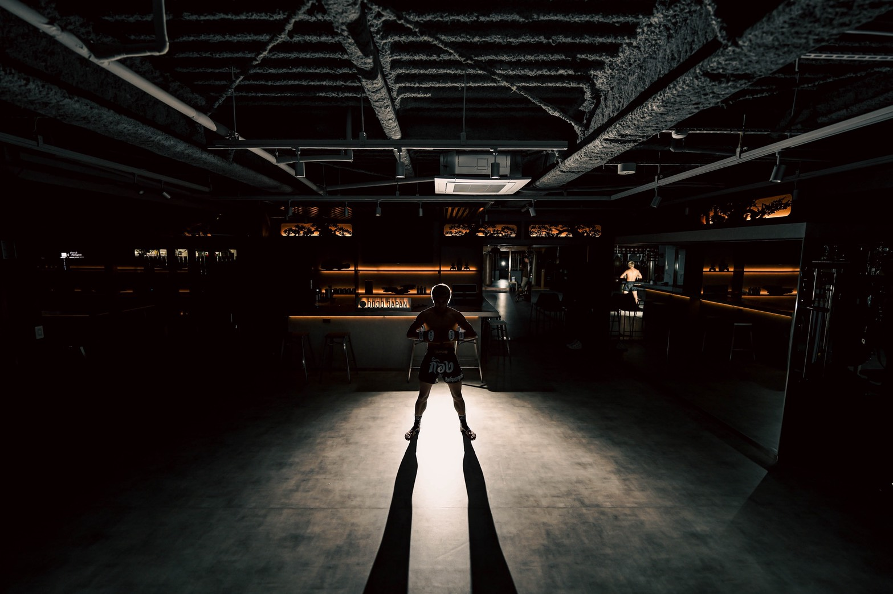
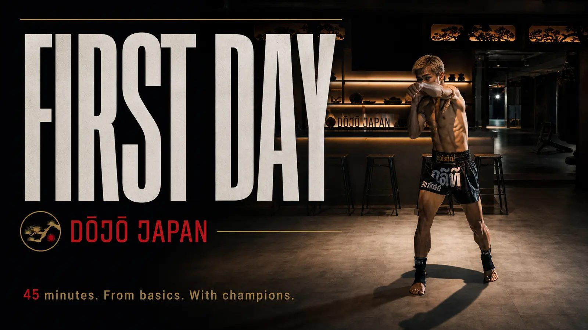

TRAINING
From warm-up to weights — a complete training journey, guided by champions.
ストレッチに始まり、最後のウェイトトレーニングまで。チャンピオンと共に進める王道の稽古フロー。
SEVEN STEPS
初めての方でも安心して取り組めます。
ストレッチから仕上げまで、トレーナーが順を追って丁寧に指導します。
STEP 01 / STRETCH
怪我防止のための準備運動。
稽古前に必ず身体をほぐします。姿勢と呼吸を意識しながら、ゆっくり身体を伸ばします。
STEP 02 / JUMP ROPE
心拍を上げ、リズム感を養う。
有酸素運動で代謝を上げます。バランス感覚・俊敏性・反射速度の向上にもつながります。

STEP 03 / BASICS
拳の握り方・構え・体重移動を確認。
鏡の前でトレーナーと一緒に、基本動作を確認します。一つひとつの動きを分かりやすく丁寧に指導します。

STEP 04 / BAG WORK
正しいフォームでパンチ・キックを打ち込む。
サンドバッグに向かって、実際にパンチとキックを打ち込みます。フォームとリズムを保ちながら反復稽古を重ねます。

STEP 05 / MITT WORK
トレーナーが構えるミットへ打ち込む。
トレーナーが構えるミットへ打ち込んでいきます。テクニックと反射神経が磨かれ、ストレス発散にも効果的です。

STEP 06 / MASS SPARRING
希望者のみ軽い打撃で間合いと駆け引きを学ぶ実戦稽古。
希望者のみ参加いただきます。トレーナーが必ず立ち会い、安全に配慮して行います。距離感・タイミング・駆け引きを身体で覚えます。
STEP 07 / WEIGHT TRAINING
打撃に必要な筋力と体幹を鍛える。
専用スペースのフリーウェイトで、筋力と体幹を整えます。トレーナーがサポートするので、自分に合った強度で無理なく取り組めます。
DAILY TRAINING
※ 上記は標準的な稽古の流れです。
ご経験や体調に合わせて、トレーナーが内容を調整します。
マススパーリング（STEP 06）は希望者のみ。無理にお勧めすることはありません。

PHOTOGRAPHED BY · MODEL TRAINER
ウォーワンチャイプロモーション 所属
DŌJŌ JAPAN 外部トレーナー
本ページの写真は全て石井選手にモデルとしてご協力いただいております。
DŌJŌ JAPAN では石井選手をはじめとする現役トップクラスの選手や DŌJŌ JAPAN 専属の元トップクラス選手のトレーナー陣が直接指導させていただきます。

FREE TRIAL · DROP-IN WELCOME
お電話または Instagram DM よりお気軽にお問い合わせください。
Non-Japanese speakers — please contact us via Instagram DM. Our staff will reply in English.